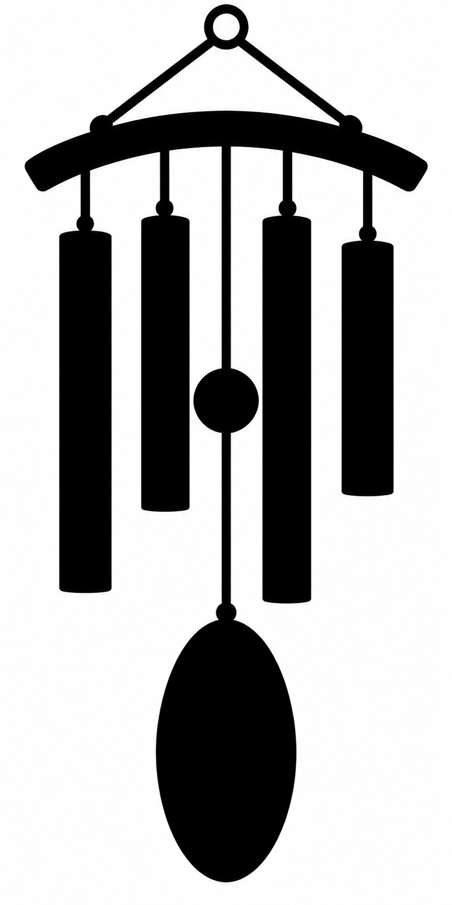

Produktionsansicht mit Motivspoiler. Technische Zertifizierung, Motivqualität und redaktionelle Freigabe sind getrennt. Motiv-/Spielabnahme: offen.
Quelle: windspiel-ma-r02 · Datei: MA-r02.png
Original SHA-256: 1cbb869b0301f0b6ba95c9f3327d61dbe0c595fceabcca3e64664d59fe0feaaa
Normalisiert SHA-256: 78f79cd135dcbb36c6e63b80cd39932c600ae3a8193f716f7e05c26dd348a5e6

{'format': 'picross-image-design-v1', 'source_id': 'windspiel-ma-r02', 'origin': 'Aus dem freigegebenen C-r01 (SHA-256 82a90396033ea58038de07396a5d741e8edea745f711f91a07232ab912e2c278) durch native Bildbearbeitung abgeleitete MA-r02. Herkunft und Originalbytes im Paket.', 'rights': 'Für diesen Projektauftrag neu erzeugte KI-Bilder, keine fremde Bildreferenz.', 'briefing': 'Vier Röhren in festgelegter Längenfolge, gebogener Träger, Ringöffnung, mittiger Klöppel und ovales Segel erhalten; Weißräume schützen. Höhe genau 30. Dieser Entwurf ist noch nicht menschlich freigegeben und darf vor Motivfreigabe nicht importiert werden.', 'working_mode': 'faithful', 'width': 14, 'height': 30, 'crop': [36, 0, 848, 1740], 'fit': 'exact', 'background': '#ffffff', 'alpha_below': 128, 'mode': 'mono', 'palette': [{'id': 'ink', 'rgb': '#000000'}], 'variants': [{'id': 'area-128', 'method': 'area', 'threshold': 128}, {'id': 'area-176', 'method': 'area', 'threshold': 176}]}
{'format': 'PNG', 'source_size': [887, 1774], 'source_mode': 'RGB', 'orientation': 1, 'normalized_size': [887, 1774], 'color_treatment': 'untagged/sRGB RGB or gray interpreted as sRGB', 'icc_sha256': None, 'alpha': 'preserved, composited against design background only during rasterization'}
{'tool': 'rp3-image-1', 'pillow': '12.3.0', 'jpeg': '8.0', 'jpeg_turbo': '3.1.4.1', 'littlecms': '2.19', 'zlib': '1.3.1.zlib-ng'}
{'status': 'solved', 'proof_verified': True, 'certified': True, 'logic_hash': '02749783538296b6244062243613179e6d1e4f1aae14940a1fc23c238b82cdd9', 'profile': {'id': 'full-line-mono', 'version': 1, 'start': 'unknown', 'deduction': 'all-line-supported-values', 'search': False}, 'profile_hash': 'e49e4cd74c4c4c02e08170ce670a40f48b82490a6bea52c3c764143d7a0af4b0', 'steps': 68, 'line_evaluations': 112, 'elapsed_seconds': 0.028526699999929406}
Kandidat: be7d25ee7747e58c2cfb4ebce5cffb3ebafede287d767fe22d25d0494098f654
{'id': 'area-128', 'method': 'area', 'threshold': 128}
| Linie | Vollständige Hinweise (Länge:Farb-ID) |
|---|---|
| 1 | – |
| 2 | – |
| 3 | – |
| 4 | – |
| 5 | 10:ink |
| 6 | 3:ink 3:ink |
| 7 | – |
| 8 | 1:ink 2:ink 2:ink |
| 9 | 2:ink 2:ink 2:ink 2:ink |
| 10 | 2:ink 2:ink 2:ink 2:ink |
| 11 | 2:ink 2:ink 2:ink 2:ink |
| 12 | 2:ink 2:ink 2:ink 2:ink |
| 13 | 2:ink 2:ink 2:ink 2:ink |
| 14 | 2:ink 6:ink 2:ink |
| 15 | 2:ink 2:ink 3:ink 2:ink |
| 16 | 2:ink 2:ink 2:ink 2:ink |
| 17 | 2:ink 2:ink 2:ink 2:ink |
| 18 | 2:ink 2:ink |
| 19 | 2:ink 2:ink |
| 20 | 2:ink 2:ink |
| 21 | – |
| 22 | 2:ink |
| 23 | 4:ink |
| 24 | 4:ink |
| 25 | 4:ink |
| 26 | 4:ink |
| 27 | 4:ink |
| 28 | 4:ink |
| 29 | 4:ink |
| 30 | 2:ink |
| Linie | Vollständige Hinweise (Länge:Farb-ID) |
|---|---|
| 1 | 1:ink |
| 2 | 1:ink 12:ink |
| 3 | 2:ink 13:ink |
| 4 | 1:ink |
| 5 | 1:ink 10:ink |
| 6 | 1:ink 10:ink 7:ink |
| 7 | 1:ink 1:ink 9:ink |
| 8 | 1:ink 2:ink 9:ink |
| 9 | 1:ink 13:ink 7:ink |
| 10 | 1:ink 13:ink |
| 11 | 1:ink |
| 12 | 2:ink 9:ink |
| 13 | 1:ink 9:ink |
| 14 | 1:ink |
{'status': 'solved', 'proof_verified': True, 'certified': True, 'logic_hash': '19eb9d64f8d30e6644eb62540ad3b57325bf717aa70b0f3dfd6359023e2db314', 'profile': {'id': 'full-line-mono', 'version': 1, 'start': 'unknown', 'deduction': 'all-line-supported-values', 'search': False}, 'profile_hash': 'e49e4cd74c4c4c02e08170ce670a40f48b82490a6bea52c3c764143d7a0af4b0', 'steps': 93, 'line_evaluations': 137, 'elapsed_seconds': 0.030704299999342766}
Kandidat: cddf1e2bbe084dc7059d4051e6b391693680329ecfe02448a637e57ec328e54a
{'id': 'area-176', 'method': 'area', 'threshold': 176}
| Linie | Vollständige Hinweise (Länge:Farb-ID) |
|---|---|
| 1 | 1:ink |
| 2 | 2:ink |
| 3 | – |
| 4 | 1:ink 1:ink |
| 5 | 10:ink |
| 6 | 5:ink 5:ink |
| 7 | 1:ink 1:ink |
| 8 | 1:ink 2:ink 2:ink 1:ink |
| 9 | 2:ink 2:ink 2:ink 2:ink |
| 10 | 2:ink 2:ink 2:ink 2:ink |
| 11 | 2:ink 2:ink 2:ink 2:ink |
| 12 | 2:ink 2:ink 2:ink 2:ink |
| 13 | 2:ink 6:ink 2:ink |
| 14 | 2:ink 6:ink 2:ink |
| 15 | 2:ink 6:ink 2:ink |
| 16 | 2:ink 2:ink 2:ink 2:ink |
| 17 | 2:ink 2:ink 2:ink 2:ink |
| 18 | 2:ink 2:ink |
| 19 | 2:ink 2:ink |
| 20 | 2:ink 2:ink |
| 21 | 1:ink |
| 22 | 2:ink |
| 23 | 4:ink |
| 24 | 4:ink |
| 25 | 5:ink |
| 26 | 6:ink |
| 27 | 5:ink |
| 28 | 4:ink |
| 29 | 4:ink |
| 30 | 2:ink |
| Linie | Vollständige Hinweise (Länge:Farb-ID) |
|---|---|
| 1 | 1:ink |
| 2 | 1:ink 12:ink |
| 3 | 16:ink |
| 4 | 3:ink |
| 5 | 2:ink 10:ink 1:ink |
| 6 | 1:ink 10:ink 7:ink |
| 7 | 1:ink 1:ink 3:ink 9:ink |
| 8 | 2:ink 1:ink 3:ink 9:ink |
| 9 | 1:ink 13:ink 7:ink |
| 10 | 2:ink 14:ink 3:ink |
| 11 | 3:ink |
| 12 | 13:ink |
| 13 | 1:ink 9:ink |
| 14 | 1:ink |